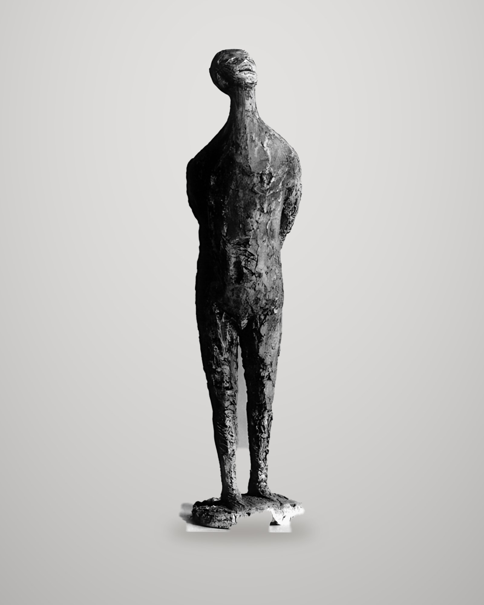

Sfondo rimosso, nitidezza e colore migliorati con strumenti di IA. Nessuna parte dell'opera è stata generata.Background removed, sharpness and colour improved with AI tools. No part of the work was generated.
← Tutte le opereAll works
UR 010
Senza titoloUntitled
pietra, 1960–1970stone, 1960–1970
- CatalogoCatalogue
- UR 010
- AnnoYear
- 1960–1970
- TecnicaMedium
- pietrastone
- TipoType
- sculturasculpture
- DimensioniDimensions
- da completareto be completed
- CollocazioneLocation
- da completareto be completed
- VisteViews
- 1